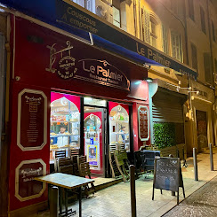

Qui Sommes-nous ?
Envie d’un moment chaleureux et dépaysant au cœur de Marseille ? Le Palmier vous accueille dans une ambiance conviviale et détendue, idéale pour savourer une cuisine méditerranéenne aux accents orientaux. Dès les beaux jours, profitez de notre agréable terrasse. Et pour votre confort en toute saison, notre salle est entièrement climatisée.
Notre carte met à l’honneur une cuisine généreuse, parfumée et pleine de saveurs. Couscous maison, tajines mijotés, grillades savoureuses… chaque plat est préparé avec soin à partir d’ingrédients frais. Laissez-vous aussi tenter par nos délicieuses pâtisseries orientales accompagnées d’un thé à la menthe traditionnel. Chez Le Palmier, la gourmandise rime avec authenticité.
Venir chez nous
42 rue Vacon,13001 Marseille,
France
Nos horraire d’ouverture
Lundi
09:00-23:00
Mardi
09:00-23:00
Mercredi
09:00-23:00
Jeudi
09:00-23:00
Vendredi
09:00-23:00
samedi
09:00-23:00
dimanche
09:00-23:00